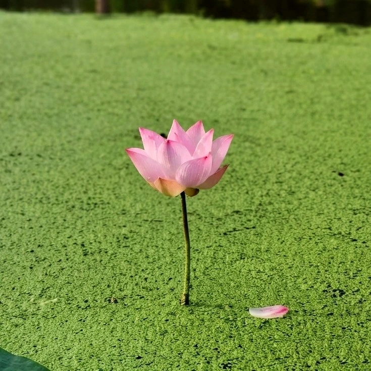

水生植物 · 植物界
荷花 Nelumbo nucifera

莲科多年生水生草本，叶片与花挺出水面，花大色雅，莲藕和莲子可食，是中国传统名花与文化符号。
- 分类
- 门被子植物门纲木兰纲目山龙眼目科莲科属莲属
- 栖息环境
- 湖泊、池塘、水田等静水或缓流水体，喜温暖、阳光充足
- 地理分布
- 原产亚洲热带与亚热带，中国南北各地广泛栽培，印度、日本等国也有分布
- 保护级别
- 暂无评估
物种志
荷花为莲科莲属多年生水生草本，地下具肥厚的根状茎，即莲藕，横生于水底泥中。叶片圆形，盾状着生，直径可达 60 厘米，全缘或波状，表面有蜡质白粉，水珠滚落而不留痕；叶柄长而挺出水面。花单生，直径 10–25 厘米，有粉、白等色，花瓣多数，花期 6–9 月，果期 8–10 月，花托膨大成莲蓬，内藏莲子。
荷花原产亚洲热带、亚热带地区，中国、印度栽培历史悠久，喜温暖、阳光充足和富含腐殖质的水体，要求静水或缓流、水深 30–120 厘米。它全身可用：莲藕和莲子可食，荷叶可包食物、泡茶，莲心、莲房、藕节均可入药。荷花在中国文化中象征高洁，“出淤泥而不染”的名句流传千年，佛教中更以莲花为圣洁的象征。荷叶表面的微纳米结构具有自洁效应，被称为“荷叶效应”。
形态与习性
- 株高挺水叶高 1–2 米，叶径可达 60 厘米
- 花期6–9 月，单朵花开 3–4 天
- 果期8–10 月，莲蓬内结莲子
- 光照极喜光，每天需 6 小时以上直射光
- 水分生长水深 30–120 厘米，静水为宜
- 土壤富含腐殖质的黏质塘泥
- 繁殖以藕段（种藕）繁殖为主
- 主要用途观赏、莲藕与莲子食用、荷叶药用
趣味知识
- 荷叶表面布满微纳米结构和蜡质，水珠滚过会带走灰尘，这一现象被称为“荷叶效应”。
- 莲子外壳坚硬致密，辽宁普兰店出土的古莲子曾成功萌发，埋藏上千年仍有生命力。
- 莲藕折断时会出现细丝，即“藕断丝连”，那是藕中的螺旋状导管。
- 荷花与睡莲不同，荷花叶片和花挺出水面，睡莲则大多浮在水面。